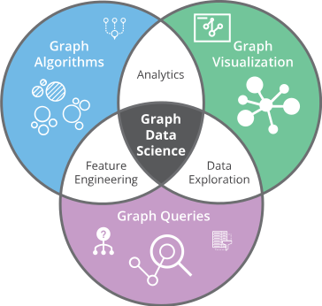

1. Introduction
In this concluding chapter, we examine several ways in which
knowledge graphs intersect with Artificial Intelligence (AI). As noted
in the opening chapter, labeled directed graphs have been used for
knowledge representation since the early days of AI research. Our
focus here is on the role of knowledge graphs in more recent
developments. Accordingly, we organize the discussion around three
themes: knowledge graphs as a test bed for AI algorithms; the
emergence of graph data science as a distinct area of study; and the
role of knowledge graphs in the broader pursuit of AI's long-term
goals.
2. Knowledge Graphs as a Test-Bed for Current Generation AI Algorithms
Knowledge graphs have a two-way relationship with AI algorithms. On
one hand, knowledge graphs enable many current AI applications, and on
the other, many current AI algorithms are used in creating knowledge
graphs. We consider this symbiotic relationship in both
directions.
Personal assistants, recommender systems, and search engines are
applications that exhibit intelligent behavior and have billions of
users. It is now widely accepted that these applications perform
better when they can leverage knowledge graphs. A personal assistant
using a knowledge graph can complete more tasks. A recommender system
with a knowledge graph can make better recommendations. Similarly, a
search engine can return better results when it has access to a
knowledge graph. These applications therefore provide a compelling
context and a concrete set of requirements for knowledge graphs to
have an impact on real-world product offerings.
To create a knowledge graph, we must absorb knowledge from multiple
information sources, align that information, distill key pieces of
knowledge from a large volume of data, and mine that knowledge to
extract insights that influence intelligent behavior. AI techniques
play an important role at each stage of knowledge graph creation and
exploitation. For extracting information from sources, we use entity
and relation extraction techniques. For aligning information across
multiple sources, we use techniques such as schema mapping and entity
linking. To distill the extracted information, we apply techniques
such as data cleaning and anomaly detection. Finally, to extract
actionable insights from the graph, we use techniques such as
inference algorithms and natural language question answering.
In summary, knowledge graphs enable AI systems by providing both
motivation and concrete requirements for their development. At the
same time, AI techniques fuel our ability to create knowledge graphs
economically and at scale.
3. Knowledge Graphs and Graph Data Science
Graph data science is an emerging discipline that aims to derive
knowledge by leveraging the structure inherent in data. Organizations
typically have access to large volumes of data, but their ability to
extract value from this data has often been limited to a fixed set of
predefined reports. Graph data science is transforming this experience
by combining graph algorithms, graph queries, and visualizations into
tools and products that significantly accelerate the process of
gaining insights.

Figure 1. Emerging new discipline of Graph Data Science (Figure Credit: Neo4j)
As we saw in the analytics-oriented use cases for the financial
industry, organizations are increasingly interested in exploiting the
relational structure of their data to make predictions about risk, new
market opportunities, and related outcomes. Predictive tasks are
commonly addressed using machine learning algorithms, which typically
rely on carefully engineered features. As machine learning algorithms
have become more accessible and are often available as off-the-shelf
solutions, feature engineering has emerged as a distinct and critical
skill. Effective feature engineering requires both a deep
understanding of the application domain and a solid grasp of how
machine learning algorithms operate.
This synergy between traditional graph-based systems and machine
learning techniques for identifying and predicting relational
properties in data has catalyzed the emergence of graph data science as
a distinct sub-discipline. Because of the high-impact use cases enabled
by graph data science, it is increasingly regarded as a valuable and
in-demand skill in industry.
4. Knowledge Graphs and the Longer-Term Objectives of AI
Early AI research focused on explicitly representing knowledge,
giving rise to the first knowledge graphs in the form of semantic
networks. Over time, semantic networks were formalized, leading to
successive generations of representation languages, including
description logics, logic programs, and graphical models. Alongside
the development of these languages, researchers also addressed the
challenge of authoring knowledge. Techniques for knowledge authoring
have ranged from knowledge engineering and inductive learning to more
recent methods based on deep learning.
To achieve the broader vision of AI, it is essential to have
knowledge representations that align with human understanding and
support reasoning. While some AI tasks, such as search,
recommendation, or translation, do not require perfect alignment with
human understanding, many domains demand precise, interpretable
knowledge. Examples include legal knowledge for tax calculations,
subject-matter expertise for teaching, or contract knowledge for
automated execution. Even in domains where explicit knowledge is not
strictly required, the resulting AI behavior must often be
explainable, allowing humans to understand its reasoning. For these
reasons, explicit knowledge representation remains a critical
component of AI.
Some argue that traditional knowledge engineering does not scale,
whereas machine learning and natural language processing (NLP) methods
do. This argument, however, often overlooks the limitations of these
scalable approaches. For example, language models can compute word
similarity but cannot explain why two words are considered similar. In
contrast, resources like WordNet provide an interpretable basis for
such similarity. Scalable methods depend heavily on human input, such
as hyperlinks, click data, or explicit feedback. Combining automated
methods with knowledge graphs to produce human-understandable
representations is therefore essential for AI systems that truly
reason and explain their conclusions.
While knowledge graphs of triples are valuable, they are
insufficient for many AI tasks that require more expressive
representations. Advanced formalisms, though less commonly used due to
cost and complexity, address challenges that current deep learning and
NLP methods cannot fully solve. These challenges include
self-awareness, commonsense reasoning, model-based reasoning, and
experimental design. For instance, a self-aware AI could recognize the
limits of its knowledge, while commonsense reasoning allows a system
to detect impossible scenarios, such as a coin dated 1800 B.C. Current
language models can generate coherent short texts, but they lack a
global narrative model for long-term coherence. Developing AI systems
that can master a domain, formulate hypotheses, design experiments,
and analyze results remains beyond the reach of current
technologies.
5. Summary
We have considered three ways in which knowledge graphs intersect
with AI: as a test-bed for evaluating machine learning and NLP
algorithms, as an enabler of the emerging discipline of graph data
science, and as a core component in realizing the long-term vision of
AI. We hope this volume inspires readers to explore the potential of
scalable knowledge graph creation and use. At the same time, it is
important to keep sight of the longer-term goal: developing
expressive, human-understandable representations that can also be
created at scale.
6. Further Reading
Using Machine Learning with Graphs is an important aspect of
knowledge graphs that only received a brief introduction in the first
chapter. A good starting point for a deeper exploration of this topic
is a survey paper on learning embeddings from
graphs [Hamilton
et. al. 2017]. For a practical resource on graph analytics and
algorithm implementations useful for graph data science experiments
and hands-on learning, the resources provided by Neo4j are an
excellent place to
begin [Neo4j].
The future architectures for AI is a hotly contested topic, but two
notable voices in this space
are [Marcus 2018]
and [Lecun 2022].
[Hamilton
et. al. 2017] Hamilton, Ying & Leskovec (2017), Representation
Learning on Graphs: Methods and
Applications. https://arxiv.org/abs/1709.05584
[Neo4j] Neo4j Graph Algorithms Documentation.
[Marcus 2018]
Marcus, Gary (2018), Deep Learning: A Critical Appraisal.
[Lecun 2022] LeCun,
Y. (2022), A Path Towards Autonomous Machine Intelligence (Version
0.9.2). https://openreview.net/pdf?id=BZ5a1r-kVsf
Exercises
Exercise 10.1.
Which of the following statements is false?
|
(a) |
Knowledge graphs have been an essential ingredient to the success of personal assistants. |
|
(b) |
Machine learning is indispensable for creating large-scale modern knowledge graphs. |
|
(c) |
Knowledge graphs will eventually be unnecessary for the success of AI applications. |
|
(d) |
Knowledge graphs significantly expand the inferences possible using natural language. |
|
(e) |
Technology is now available to create rudimentry knowledge graphs from images. |
Exercise 10.2.
Which of the following is out of scope of graph data science?
|
(a) |
Transaction management |
|
(b) |
Feature engineering |
|
(c) |
Visual Analytics |
|
(d) |
Block Chain |
|
(e) |
Semantic transformation of logical expressions |
Exercise 10.3.
Which of the following is true about how knowledge graphs might relate to the future of AI?
|
(a) |
Property graphs provide a sufficient representation for us to build future intelligent applications. |
|
(b) |
Expressive logic-based representations are what we need for future intelligent applications. |
|
(c) |
Some explicit representation similar to knowledge graphs is required, but exactly what is needed, is open for future research. |
|
(d) |
Future techniques of AI will have reducing reliance on explicit representation. |
|
(e) |
The goal of AI should be to eliminate the need for any representation. |
|
 CS520
CS520